Book PDF editorial directions
13 original concept boards. Primary visual modes are 01 Systems Monograph and 07 Evidence Notebook; 13 supplies the content sequence.
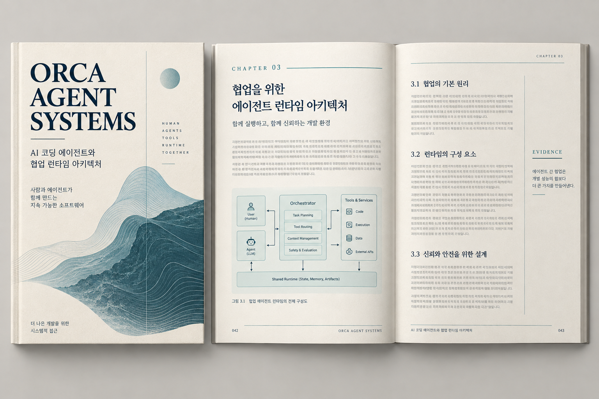
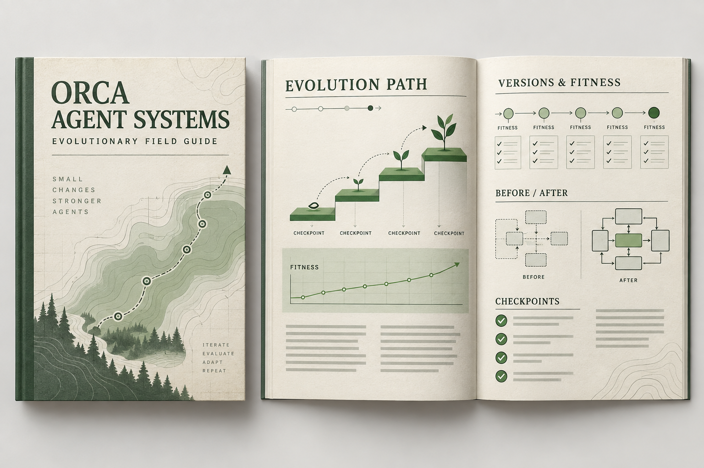
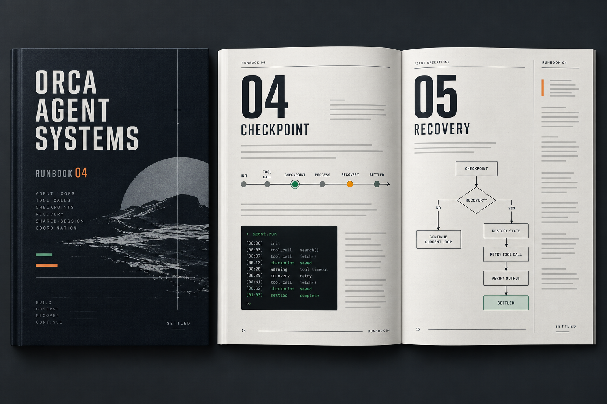
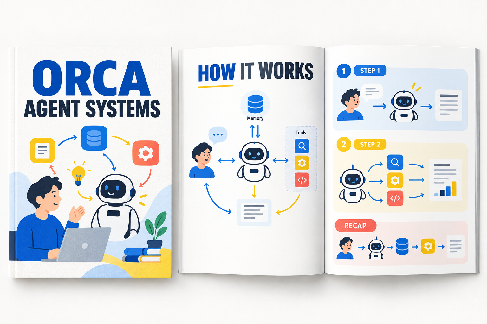
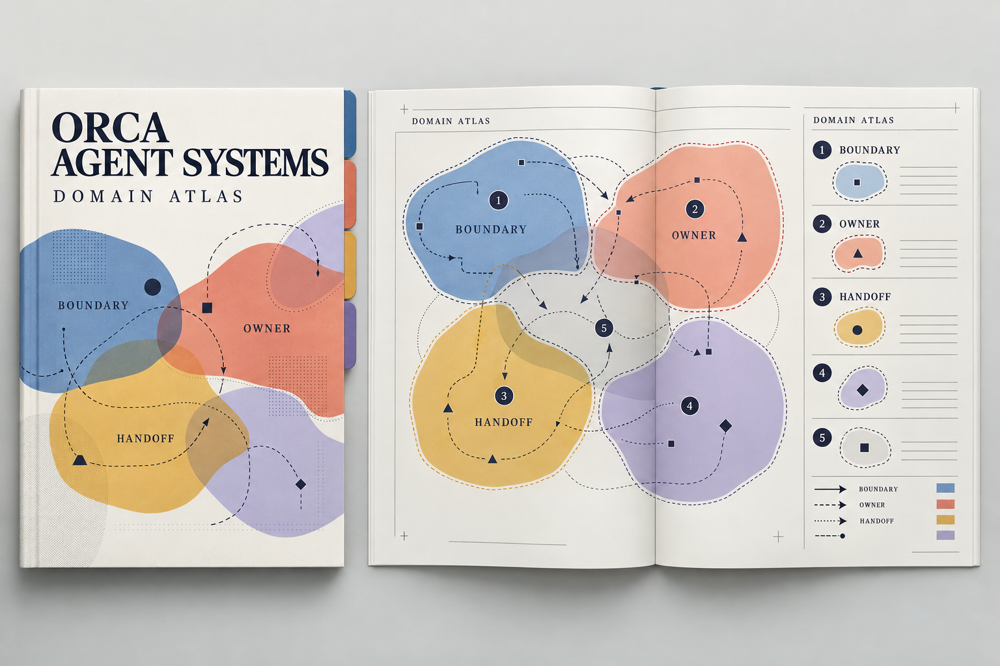
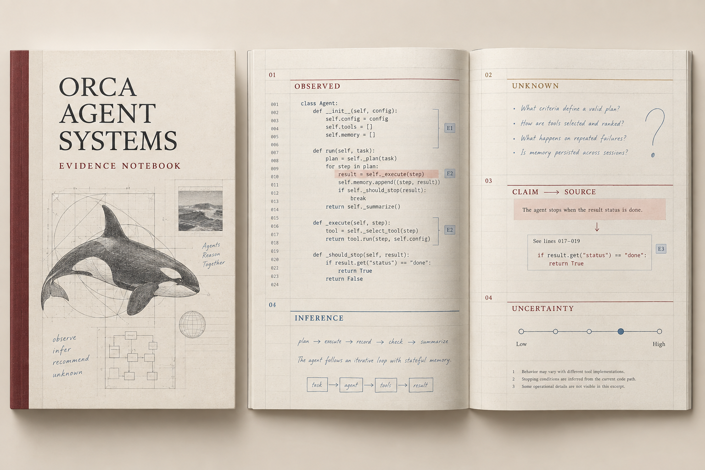
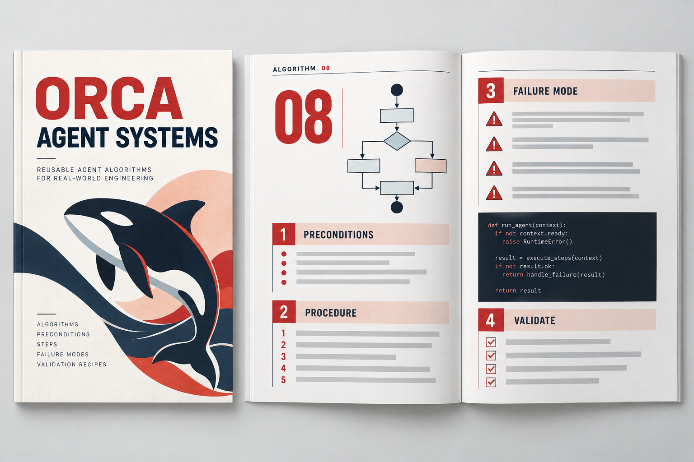
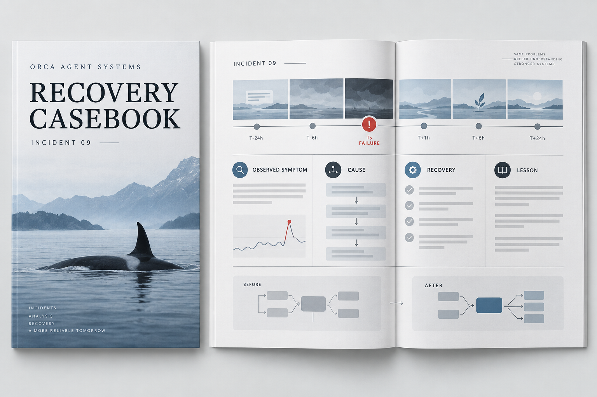
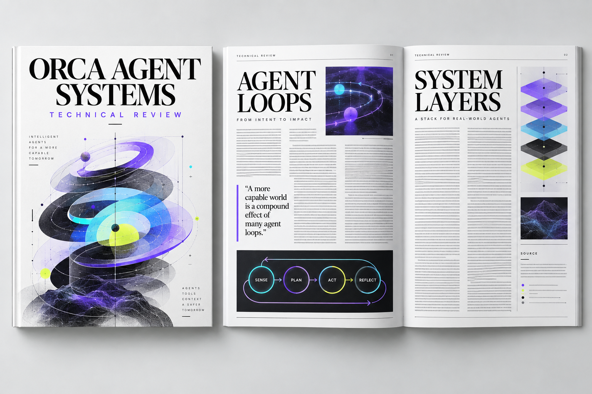
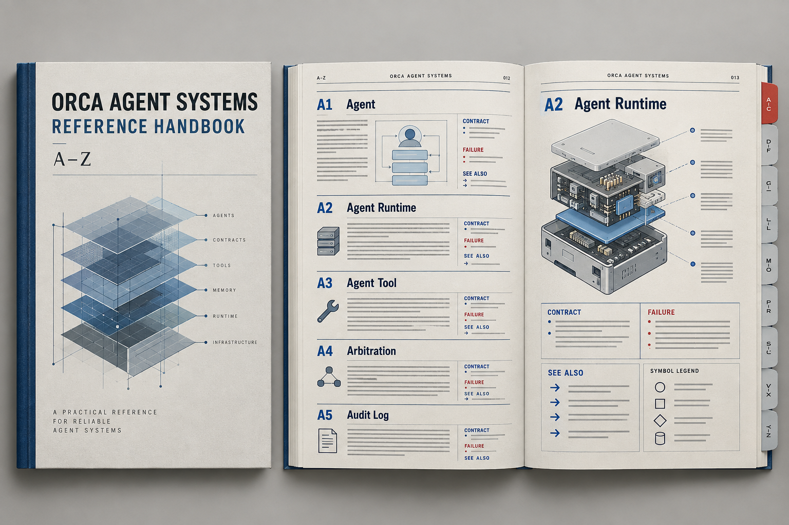
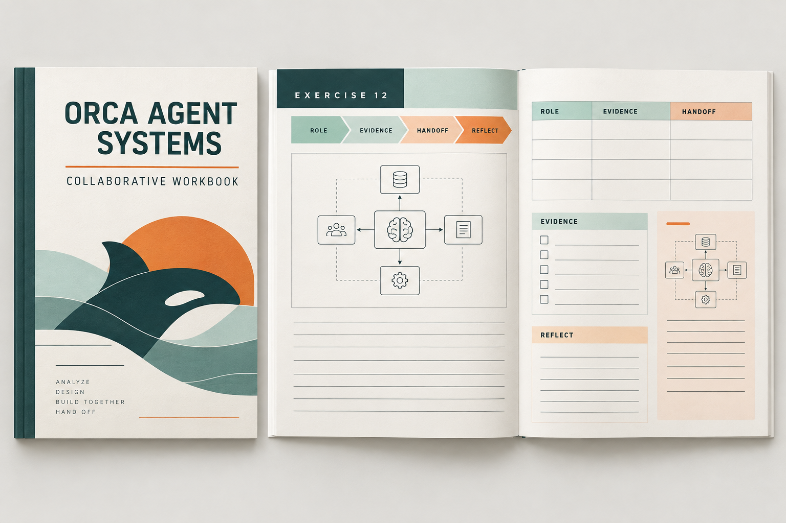
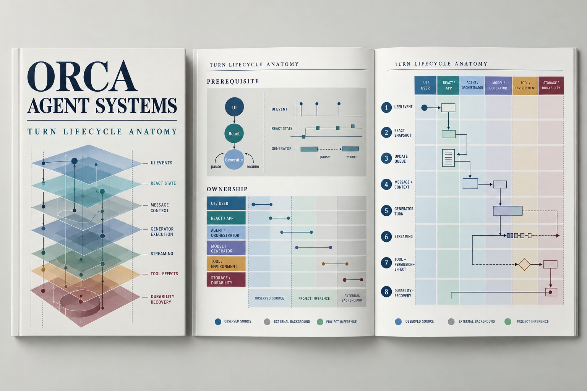
Primary visual modeContent sequenceGenerated assets are direction boards, not final PDF pages.